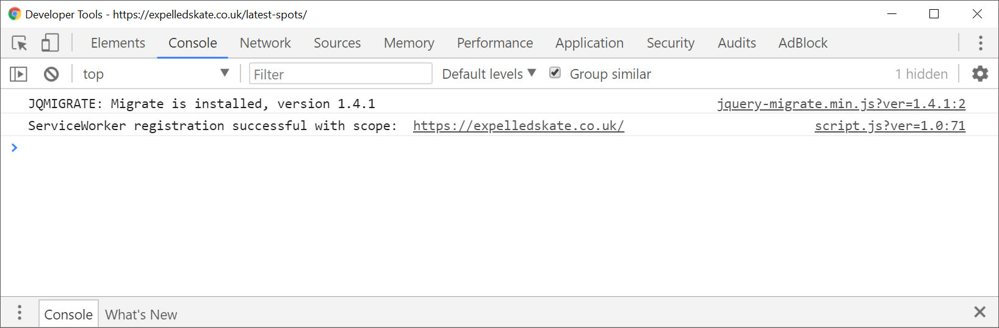
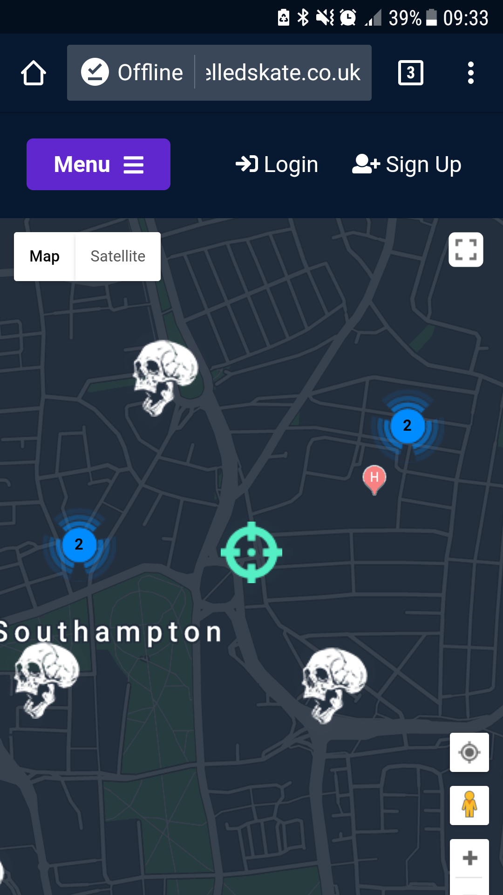

Progressive Web Applications: Blending Industries
Blend, Merge, Connect
With the rise in the use of mobile devices, there has been a clear divide between native mobile applications and online websites.
Aims of this Presentation
This presentation aims to inspire developers to improve their applications with cutting-edge technologies.
Challenging industries and the need for creating new applications instead of creating adaptable solutions.
Let's Define Our Industries
Online Websites and Applications
Usually consisting of front-end languages such as HTML, CSS and JavaScript.
With a back-end system built on PHP, .NET, or other serverside language.
Online Websites and Applications: Responsive Design
Since 2013, RWD (Responsive Website Design) has been the hot trend.
Heck, I wouldn't even call it a trend!
It's an essential principle of web development with most users now using their mobile device to browser the internet.
iOS, Android and Other Native Mobile Applications
In June 2007 the first iPhone was brought to market.
The invention gave birth to a new industry, mobile applications.
Seperate from responsive websites, the applications are often coded in languages fitting per device.
Java is commonly used for Android development and Swift for iOS.
Wait a second, why do mobile applications exist?
Mobile applications exist as they are a reliable method of creating applications which can store large amounts of data and files offline.
Most mobile applications can be used without an internet connection.
Not to mention the access to inputs from your device.
These inputs include microphones, cameras, motion sensors, etc.
All of these points would be valid...
If this wasn't 2018.
HTML & JS Webcam
HTML & JS Microphone
o
Wait a second, why do mobile applications exist?
Whilst it may not seem it when compared to the revolution of reponsive website design, web development has changed quite rapidly recently.
We are now seeing a rise in access to inputs from devices.
JavaScript APIs that focus on requesting data from inputs previously listed (microphones, cameras, motion sensors).
A PWA Case Study - George.com


A PWA Case Study - George.com
- 3.8x - Faster average page load time
- 2x - Lower bounce rate
- 31% - Increase in Conversion Rate
- 20% - More page views per visit
- 28% - Longer average time on site for visits from Home screen
Visiting Google (Circa 2017)
INSERT IMAGE OF ME AT GOOGLE
Main Takeaways
Progressive Web Applications aren't a new trend.
They're a new concept that build on existing technologies.
Caching information and presenting websites to users in a familiar design.
A website can benefit from PWA technologies, even if not a complete PWA.
New Support
Since iOS 11.3, Apple now has support for service workers and progressive web application methods.
This update in support will increase the scope of users that are able to take advantage of progressive website application technologies (service worker, manifest files, etc.).
New Support
In April of 2018, the first PWA support for windows machines was released to the Windows Store. Not only are developers creating PWAs for the world wide web, mobile phones, but also desktop operating systems.
Core Technologies
- Registers a service worker
- Responds with a 200 when offline
- Contains some content when JavaScript is not available
- Uses HTTPS
- Redirects HTTP traffic to HTTPS
- The user can be prompted to install the web app
- Configured for a custom splash screen
- Address bar matches brand colours
- Has a
<meta name=”viewport”>tag with width or initial-scale - Content is sized correctly for the viewport
- Web Application on Android Homescreen
Expelled Skateboarding
Expelled Skateboarding Demo
Registers a service worker
Service workers act as a cache for the storage of web files in the browser, preventing the need for files to be downloaded several times on a site.
Service workers are enabled through the use of Javascript and will cache files in the directories specified.
Registers a service worker
const cacheName = 'files';
addEventListener('fetch', fetchEvent => {
const request = fetchEvent.request;
if (fetchEvent.request.url.includes('expelled_theme')) {
if (request.method !== 'GET') {
return;
}
fetchEvent.respondWith(async function() {
const responseFromFetch = fetch(request);
fetchEvent.waitUntil(async function () {
const responseCopy = (await responseFromFetch.clone();
const myCahce = await cache.open(cacheName);
await myCache.put(request, responseCopy);
}());
if (request.headers.get('Accept')).includes('text/html')) {
try {
return await responseFromFetch;
} catch (error) {
return caches.match(request);
}
} else {
const responseFromCache = await caches.match(request);
return responseFromCache || responseFromFetch;
}
}());
}
});
Registers a service worker
Responds with a 200 when offline
The PWA audits carried out in Google Chrome's Lighthouse indicates that the site responds with a 200 HTTP code.
Testing shows that the site responds with an offline label and checkbox in the URL bar when accessing the site offline.
Responds with a 200 when offline
Contains some content when JavaScript is not available
When JavaScript is disabled in-browser, the following requests are made and complete when accessing the homepage of the Expelled Skateboarding site.
Contains some content when JavaScript is not available
Uses HTTPS
The Expelled Skateboarding site is hosted by DigitalOcean on a server running Ubuntu 16.04.
The server uses Apache to configure the domain network routing.
An SSL certificate was generated for the domain https://expelledskate.co.uk and added to the Apache configuration.
Redirects HTTP traffic to HTTPS
Once registered, WordPress settings were updated to configure the CMS to assume HTTPS availability on all pages and field settings.
There are no areas of the site that request HTTP protocols internally.
With most third-party scripts supporting HTTPS, the site is fully secure and uses HTTPS in all requests.
The user can be prompted to install the web app
Users of the Expelled Skateboarding website may be prompted on either desktop or mobile devices to notify them of the option to install the web app on their machine.
The minimum requirement for prompting of installation of a web app is a web manifest file.
Configured for a custom splash screen
A custom splash screen has been configured in the manifest file for the website.
A ‘background_color’ property has been defined with the site’s primary colour of “#071930”.
As well as an icons set at 192px by 192px, 384px by 384px and 512px by 512px.
Address bar matches brand colours
Again, the address bar has been set to match the brand colours, setting both the background_color and theme_color property to #071930.
{
"name": "Expelled Skateboarding",
"short_name": "Expelled",
"background_color": "#071930",
"theme_color": "#071930",
"display": "fullscreen",
"start_url": "https://expelledskate.co.uk/",
"orientation": "any",
"lang": "en"
}
http://expelledskate.co.uk/wp-content/themes/expelled_theme/img/favicons/site.webmanifest
Has a <meta name=”viewport”> tag with width or initial-scale
The head tag of each page includes favicons, title, and meta information.
This is where the meta name viewport is defined to scale at 1.0.
<html>
<head>
<meta http-equiv="X-UA-Compatible" content="IE=edge,chrome=1">
<meta name="viewport" content="width=device-width, initial-scale=1.0">
</head>
<body>
</body>
</html>
Content is sized correctly for the viewport
Web Application on Android Homescreen
Introducing the users to concepts they already understand, such as shortcuts on home screens will help blur the line and create a smooth transition to PWA implementations.